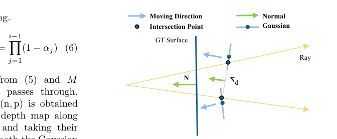

360-GeoGS
简单摘要
3D 场景重建是 AR、机器人和数字孪生等空间智能应用的基础。传统的多视图立体与稀疏视点或低纹理区域作斗争，而神经渲染方法虽然能够产生高质量的结果，但需要每个场景的优化并且缺乏实时效率。显式 3D 高斯分布 (3DGS) 可实现高效渲染，但大多数前馈变体侧重于视觉质量而不是几何一致性，从而限制了空间感知任务中准确的表面重建和整体可靠性。本文提出了一种新颖的 360 度图像前馈 3DGS 框架，能够生成几何一致的高斯图元，同时保持高渲染质量。
引入深度法线几何正则化，将渲染的深度梯度与法线信息结合起来，监督高斯旋转、缩放和位置，以提高点云和表面精度。实验结果表明，该方法在保持较高渲染质量的同时显着提高了几何一致性，为空间感知任务中的3D重建提供了有效的解决方案。


简而言之，这篇论文关注的核心是：3D 场景重建是 AR、机器人和数字孪生等空间智能应用的基础。传统的多视图立体与稀疏视点或低纹理区域作斗争，而神经渲染方法虽然能够产生高质量的结果，但需要每个场景的优化并且缺乏实时效率。显式 3D 高斯分布 (3DGS) 可实现高效渲染，但大多数前馈变体侧重于视觉质量而不是几何一致性，从而限制了空…
3D 场景重建旨在从多视图观察中恢复场景几何形状和外观，对于自动驾驶、AR/VR、机器人感知和数字孪生等应用至关重要。在室内导航中，准确高效的 3D 建模对于空间感知和定位至关重要。先前的研究探索了复杂环境中的鲁棒传感和高效推理，强调了平衡准确性、鲁棒性和计算效率的重要性。多视立体（MVS）通过多视匹配和深度估计实现高精度重建，但在低纹理条件下性能会下降。神经辐射场 (NeRF) 改进了视图合成，但需要密集的输入和每个场景的优化。
为了高效推理，显式 3D 高斯泼溅 (3DGS) 用高斯椭球表示场景，从而实现快速渲染和基于梯度的优化。采用这种方法，前馈变体通过端到端预测提高了推理效率和泛化能力，同时仍然经常难以保持几何一致性。相比之下，基于优化的方法（例如 VCR-GauS 和 NeuSG）结合了几何先验和法线约束来细化场景结构，以牺牲效率和泛化为代价实现更高的精度。随着全景相机的日益普及，360 度图像已成为稀疏视图重建的有效来源，可在一次拍摄中捕获整个场景。
前馈全景方法注重渲染质量，但投影扭曲和不稳定的深度估计通常会导致结构漂移，限制忠实的几何恢复。为了应对这些挑战，我们提出了 360-GeoGS，这是一种用于 360 度图像输入的前馈 3DGS 框架，其中包含深度法线 (D-Normal) 正则化。该框架从 360 度图像中预测多视图深度并融合各种特征，然后由 U-Net 处理以回归像素对齐的高斯基元。 D-Normal 正则化应用于渲染空间，共同监督高斯位置、尺度和方向。
多个全景基准的实验表明，我们的方法在保持高渲染质量的同时，显着提高了几何一致性和表面连续性，优于现有的前馈全景 3DGS 方法。我们的主要贡献如下：枚举我们提出了一个用于 360 个图像输入的前馈 3DGS 网络，该网络采用 SphereCNN 主干来提取球形特征并构建球形成本卷...
核心创新
综合引言与方法部分，这篇论文的核心创新可以概括为以下几方面：
1）问题定义与研究动机
3D 场景重建旨在从多视图观察中恢复场景几何形状和外观，对于自动驾驶、AR/VR、机器人感知和数字孪生等应用至关重要。在室内导航中，准确高效的 3D 建模对于空间感知和定位至关重要。先前的研究探索了复杂环境中的鲁棒传感和高效推理，强调了平衡准确性、鲁棒性和计算效率的重要性。多视立体（MVS）通过多视匹配和深度估计实现高精度重建，但在低纹理条件下性能会下降。神经辐射场 (NeRF) 改进了视图合成，但需要密集的输入和每个场景的优化。为了高效推理，显式 3D 高斯泼溅 (3DGS) 用高斯椭球表示场景，从而实现快速渲染和基于梯度的优化。采用这种方法，前馈变体通过端到端预测提高了推理效率和泛化能力，同时仍然经常难以保持几何一致性。相比之下，基于优化的方法（例如 VCR-GauS 和 NeuSG）结合了几何先验和法线约束来细化场景结构，以牺牲效率和泛化为代价实现更高的精度。随着全景相机的日益普及，360 度图像已成为稀疏视图重建的有效来源，可在一次拍摄中捕获整个场景。前馈全景方法注重渲染质量，但投影扭曲和不稳定的深度估计通常会导致结构漂移，限制忠实的几何恢复。为了应对这些挑战，我们提出了 3…
2）方法框架与核心模块
我们的目标是直接从 360 个图像输入中预测 3DGS 参数，从而以前馈方式实现几何一致的场景重建。部分介绍了整体架构，部分详细介绍了前馈预测管道，部分介绍了所提出的强制几何一致性的 D-Normal 约束。框架概述 我们的网络采用前馈设计，将 360 度图像映射到 3D 高斯基元。如图所示，重建首先提取多视图匹配特征以构建球形成本体积，然后将其用于估计初始密集深度图作为几何先验。同时，通过特征线性调制（FiLM）提取多尺度特征并进行调制，以实现跨尺度交互。融合的多模态特征与 RGB 输入和深度先验一起由 U-Net 解码器和适配器进行处理，以回归每像素高斯参数，包括位置、协方差、不透明度和颜色。预测的高斯由几何和光度损失联合监督，几何监督强调通过 D-Normal 的表面一致性，确保准确的局部几何形状。前馈 3DGS 预测特征编码流程我们采用 360Recon 框架作为球形输入特征提取的基线。 SphereCNN 主干用于从 360 个图像中获取匹配特征，这些特征用于构造球形成本体积并估计初始密集深度图作为几何先验。同时，提取一组多尺度特征图，其中低级特征保留详细的几何形状，高级特…
3）实验设计与工程价值
实现细节我们的方法在 PyTorch 中实现，使用自定义 CUDA 内核加速交叉距离计算。所有实验均在具有 80 GB VRAM 的单个 NVIDIA A100 GPU 上进行。训练的 RGB 损失是 MSE 和 LPIPS 的线性组合，加权分别为 1 和 0.05，超参数 、 、 和 根据经验设置为 1、0.1 和 0.01。数据集和指标我们在两个全景数据集 HM3D 和 Replica 上评估我们的模型，其中包含不同的室内场景。为了进行定量比较，我们将我们的方法与几种最先进的 360 方法进行比较，包括 Splatter-360 和 PanSplat。此外，MVSplat 在 360 个数据集上进行了重新训练，并作为另一个基线包含在内。我们使用标准指标（包括 PSNR、SSIM 和 LPIPS）评估所有方法在新颖视图合成方面的性能，以及使用 Abs Diff、Abs Rel、RMSE…
技术细节
下面按照论文的方法章节结构展开，重点说明模型的关键模块、公式设计和训练策略。
我们的目标是直接从 360 个图像输入中预测 3DGS 参数，从而以前馈方式实现几何一致的场景重建。部分介绍了整体架构，部分详细介绍了前馈预测管道，部分介绍了所提出的强制几何一致性的 D-Normal 约束。框架概述 我们的网络采用前馈设计，将 360 度图像映射到 3D 高斯基元。如图所示，重建首先提取多视图匹配特征以构建球形成本体积，然后将其用于估计初始密集深度图作为几何先验。同时，通过特征线性调制（FiLM）提取多尺度特征并进行调制，以实现跨尺度交互。融合的多模态特征与 RGB 输入和深度先验一起由 U-Net 解码器和适配器进行处理，以回归每像素高斯参数，包括位置、协方差、不透明度和颜色。预测的高斯由几何和光度损失联合监督，几何监督强调通过 D-Normal 的表面一致性，确保准确的局部几何形状。前馈 3DGS 预测特征编码流程我们采用 360Recon 框架作为球形输入特征提取的基线。 SphereCNN 主干用于从 360 个图像中获取匹配特征，这些特征用于构造球形成本体积并估计初始密集深度图作为几何先验。同时，提取一组多尺度特征图，其中低级特征保留详细的几何形状，高级特征捕获全局上下文。为了促进跨尺度的交互，我们采用 FiLM 来自适应地调制多尺度特征。具体来说，首先聚合高级特征以形成全局条件表示：其中表示压缩和聚合操作。然后，低级特征被调制为： 其中 和 生成每通道缩放和移位参数。融合特征与匹配特征、密集深度预测和 RGB 输入相结合，形成后续 3DGS 回归的多模态表示。 3DGS 参数预测融合的特征由 U-Net 解码器解码以产生初始高斯基元参数，然后通过适配器模块对其进行细化以实现渲染兼容性。
该适配器对旋转进行归一化，根据深度调整比例，并转换球谐系数，以生成与输入全景图对齐的全分辨率 (512×1024) 的每像素高斯基元。预测参数包括： 高斯中心 。该网络预测图像空间中的每像素偏移，将其与深度相结合，将点投影到 3D 相机坐标中，并使用相机到世界矩阵进一步转换为世界坐标。不透明度。不透明度源自匹配置信度，根据成本量计算为归一化概率分布。协方差。协方差由比例因子和旋转矩阵定义：其中通过 Sigmoid 函数映射以保持与 d 的比例……
$$ \label{equ:1} C_{\mathrm{cond}} = \Phi\left(\{ F_i \}_{i=2}^{4} \right), $$
作为几何先验的密集深度图。同时，提取一组多尺度特征图，其中低级特征保留详细的几何形状，高级特征捕获全局上下文。为了促进跨尺度的交互，我们采用 FiLM 来自适应地调制多尺度特征。具体来说，高层...
$$ \label{equ:2} \hat{F} = \gamma(C_{\mathrm{cond}}) \cdot F + \beta(C_{\mathrm{cond}}), $$
为了跨尺度交互，我们使用 FiLM 来自适应调制多尺度特征。具体来说，首先聚合高级特征以形成全局条件表示：其中表示压缩和聚合操作。然后，低级特征被调制为：在哪里并生成每个…
$$ \label{equ:5} \Sigma = R(\theta)^T \text{diag}(s) R(\theta), $$
e，与深度相结合，将点投影到 3D 相机坐标中，并使用相机到世界矩阵进一步转换为世界坐标。不透明度。不透明度源自匹配置信度，根据成本量计算为归一化概率分布。协方差。协方差是...
$$ \label{equ:6} \mathcal{L}_\mathrm{s}=\|\min(s_1,s_2,s_3)\|_1. $$
6pt 表* 具体来说，比例因子定义了椭球体沿每个主轴的范围。然后沿着最小比例分量的方向定义法向量。最小化该分量可以有效地使椭球变平，并应用尺度正则化损失将其限制为零......
$$ \label{equ:7} \mathbf{d}(\mathbf{n},\mathbf{p})={r_z(\mathbf{n}\cdot \mathbf{p})}/{(\mathbf{n}\cdot \mathbf{r})}, $$
通常的方法通常从相机坐标系中每个高斯的中心位置获取深度。然而，这忽略了法线向量，从而限制了几何约束的有效性。因此，我们采用更合适的方法，计算相机光线之间的相交深度……
$$ \label{equ:8} \hat{D}={\sum_{i\in M} d_i\,\alpha_i\, T_i}/({\sum_{i\in M} \alpha_i\, T_i}) \qquad\quad T_i=\prod_{j=1}^{i-1}(1-\alpha_j) $$
e位置和高斯法线向量，允许它们在优化过程中联合约束以提高深度估计精度。 D-Normal 正则化 按照这种方法，我们采用 D-Normal 正则化。具体来说，深度图是使用 3DGS 渲染器生成的，遵循以下程序......



把全文方法串起来看，这篇论文的逻辑基本都遵循同一条主线：先把输入组织成更容易处理的表示，再通过模型结构和损失函数把这个表示推向目标输出，最后用可视化与数值实验共同证明该设计有效。
实验结论
实验部分主要回答两个问题：第一，方法是否真的优于已有基线；第二，这种优势来自哪一个设计决策。
实现细节我们的方法在 PyTorch 中实现，使用自定义 CUDA 内核加速交叉距离计算。所有实验均在具有 80 GB VRAM 的单个 NVIDIA A100 GPU 上进行。训练的 RGB 损失是 MSE 和 LPIPS 的线性组合，加权分别为 1 和 0.05，超参数 、 、 和 根据经验设置为 1、0.1 和 0.01。数据集和指标我们在两个全景数据集 HM3D 和 Replica 上评估我们的模型，其中包含不同的室内场景。为了进行定量比较，我们将我们的方法与几种最先进的 360 方法进行比较，包括 Splatter-360 和 PanSplat。此外，MVSplat 在 360 个数据集上进行了重新训练，并作为另一个基线包含在内。我们使用标准指标（包括 PSNR、SSIM 和 LPIPS）评估所有方法在新颖视图合成方面的性能，以及使用 Abs Diff、Abs Rel、RMSE 和 进行深度预测的性能。此外，使用精度、完整性和倒角距离在 HM3D 上评估几何重建。 0.70 0.70 10pt 定性结果定性比较如图 1、图 2 和图 3 所示。如图所示，最先进的方法在新颖的视图合成中实现了视觉上相似的结果，我们的方法和 Splatter-360 在右侧样本中产生了稍微更好的外观。在图中，MVSplat 表现出明显的深度误差，例如样本 2 中门的左边缘，而 Splatter-360 改进了整体重建，但在样本 2 和 4 中仍然显示出有限的表面深度一致性。相比之下，我们的方法生成的深度预测具有更强的几何一致性和更高的精度。图 1 中预测的 3DGS 点云进一步突出了这一改进，表明我们的方法生成的 3DGS 点具有明显增强的表面。定量结果表 、 和 总结了我们的方法在 HM3D 和 Replica 数据集上与 MVSplat、Splatter-360 和 PanSplat 相比的定量性能。如表和表所示，我们的方法在几何重建和深度估计指标方面优于 Splatter-360，这表明预测的 3DGS 点表现出更强的几何一致性以及与物体表面更好的对齐。表报告了新颖的视图合成指标，其中我们的方法实现了与当前最先进技术相当的渲染质量，并且多个指标之间存在微小差异。总的来说，这些结果表明我们的前馈 3DGS 框架实现了高保真几何重建，同时保持了有竞争力的渲染性能。
消融结果我们进行消融研究来评估 D-Normal (D-N)、尺度扁平化 (Scales) 和多尺度特征融合 (Fusion) 的贡献。如表所示，完整模型始终......
- 方法在核心指标上的优势与结构设计和训练目标直接相关；
- 消融实验表明，拿掉关键模块后性能与结果质量都有明显回落；
- 论文不仅比较数值，也关注可视化质量、稳定性和泛化能力等更贴近真实使用的信号。
理解评价
在本文中，我们提出了一个用于 360 个图像输入的前馈 3DGS 框架，集成了多视图匹配特征、FiLM 的多尺度特征编码、球形成本量的深度先验以及 D-Normal 正则化。编码特征由 U-Net 解码，并通过适配器进行细化，以生成每像素高斯原始参数。我们的方法能够在稀疏视图条件下实现准确的场景重建和高保真新视图合成。实验证明了与最先进的方法相比具有竞争力的渲染质量、精确的深度估计和增强的几何一致性，而消融研究则证实了每个组件的有效性。
局限性和未来的工作。我们的方法目前针对室内场景并依赖于准确的相机姿势。未来的工作将探索 360 度图像的无姿态重建，并研究是否可以使用生成模型恢复遮挡区域，进一步增强全景场景重建的完整性和真实性。
如果把它当成研究参考，建议重点关注三件事：第一，这套方法真正依赖的归纳偏置是什么；第二，实验中真正拉开差距的模块是哪一个；第三，它的局限究竟来自数据、算力还是监督信号本身。
以下相关论文可以作为进一步追踪的入口：